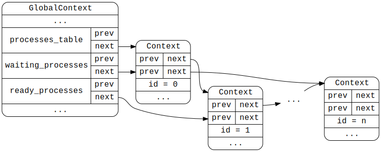

AtomVM is an “abstract” or “virtual” machine, in the sense that it simulates, in software, what a physical machine would do when executing machine instructions. In a normal computing machine (e.g., a desktop computer), machine code instructions are generated by a tool called a compiler, allowing an application developer to write software in a high-level language (such as C). (In rare cases, application developers will write instructions in assembly code, which is closer to the actual machine instructions, but which still requires a translation step, called “assembly”, to translate the assembly code into actual machine code.) Machine code instructions are executed in hardware using the machine’s Central Processing Unit (CPU), which is specifically designed to efficiently execute machine instructions targeted for the specific machine architecture (e.g., Intel x86, ARM, Apple M-series, etc.) As a result, machine code instructions are typically tightly packed, encoded instructions that require minimum effort (on the part of the machine) to unpack an interpret. These a low level instructions unsuited for human interpretation, or at least for most humans.
AtomVM and virtual machines generally (including, for example, the Java Virtual Machine) perform a similar task, except that i) the instructions are not machine code instructions, but rather what are typically called “bytecode” or sometimes “opcode” instructions; and ii) the generated instructions are themselves executed by a runtime execution engine written in software, a so-called “virtual” or sometimes “abstract” machine. These bytecode instructions are generated by a compiler tailored specifically for the virtual machine. For example, the javac compiler is used to translate Java source code into Java VM bytecode, and the erlc compiler is used to translate Erlang source code into BEAM opcodes.
AtomVM is an abstract machine designed to implement the BEAM instruction set, the 170+ (and growing) set of virtual machine instructions implemented in the Erlang/OTP BEAM.
Note
There is no abstract specification of the BEAM abstract machine and instruction set. Instead, the BEAM
implementation by the Erlang/OTP team is the definitive specification of its behavior.
At a high level, the AtomVM abstract machine is responsible for:
Loading and execution of the BEAM opcodes encoded in one or more BEAM files;
Managing calls to internal and external functions, handling return values, exceptions, and crashes;
Creation and destruction of Erlang “processes” within the AtomVM memory space, and communication between processes via message passing;
Memory management (allocation and reclamation) of memory associated with Erlang “processes”
Pre-emptive scheduling and interruption of Erlang “processes”
Execution of user-defined native code (Nifs and Ports)
Interfacing with the host operating system (or facsimile)
This document provides a description of the AtomVM abstract machine, including its architecture and the major components and data structures that form the system. It is intended for developers who want to get involved in bug fixing or implementing features for the VM, as well as for anyone interested in virtual machine internals targeted for BEAM-based languages, such as Erlang or Elixir.
This section describes AtomVM internal data structures that are used to manage the load and runtime state of the virtual machine. Since AtomVM is written in C, this discussion will largely be in the context of native C data structures (i.e., structs). The descriptions will start at a fairly high level but drill down to some detail about the data structures, themselves. This narrative is important, because memory is limited on the target architectures for AtomVM (i.e., micro-controllers), and it is important to always be aware of how memory is organized and used in a way that is as space-efficient as possible.
We start with the top level data structure, the GlobalContext struct. This object is a singleton object (currently, and for the foreseeable future), and represents the root of all data structures in the virtual machine. It is in essence in 1..1 correspondence with instances of the virtual machine.
Given the design of the system, it is theoretically possible to run multiple instances of the AtomVM in one process
space. However, no current deployments make use of this capability.
In order to simplify the exposition of this structure, we break the fields of the structure into manageable subsets:
Process management – fields associated with the management of Erlang (lightweight) “processes”
Atoms management – fields associated with the storage of atoms
Module Management – fields associated with the loading of BEAM modules
Reference Counted Binaries – fields associated with the storage of binary data shared between processes
Other data structures
These subsets are described in more detail below.
Warning
Not all fields of the GlobalContext structure are described in this document.
As a BEAM implementation, AtomVM must be capable of spawning and managing the lifecycle of Erlang lightweight processes. Each of these processes is encapsulated in the Context structure, described in more detail in subsequent sections.
The GlobalContext structure maintains a list of running processes and contains the following fields for managing the running Erlang processes in the VM:
processes_table the list of all processes running in the system
waiting_processes the subset of processes that are waiting to run (e.g., waiting for a message or timeout condition).
running_processes the subset of processes that are currently running.
ready_processes the subset of processes that are ready to run.
Processes are in either waiting_processes, running_processes or ready_processes. A running process can technically be moved to the ready list while running to signify that if it yields, it will be eligible for being run again, typically if it receives a message. Also, native handlers (ports) are never moved to the running_processes list but are in the waiting_processes list when they run (and can be moved to ready_processes list if they are made ready while running).
Each of these fields are doubly-linked list (ring) structures, i.e, structs containing a prev and next pointer field. The Context data structure begins with two such structures, the first of which links the Context struct in the processes_table field, and the second of which is used for either the waiting_processes, the ready_processes or the running_processes field.
Tip
The C programming language treats structures in memory as contiguous sequences of fields of given types. Structures
have no hidden preamble data, such as you might find in C++ or who knows what in even higher level languages. The
size of a struct, therefore, is determined simply by the size of the component fields.
The relationship between the GlobalContext fields that manage BEAM processes and the Context data structures that represent the processes, themselves, is illustrated in the following diagram:

See also
The Context data structure is described in more detail below.
Following BEAM, there are two flavors of the emulator: jit and emu.
JIT is available on some platforms (currently only x86_64) and compiles Erlang bytecode at runtime. Erlang bytecode is never interpreted. EMU is available on all platforms and Erlang bytecode is interpreted.
Modules can include precompiled code in a dedicated beam chunk with name ‘avmN’. The chunk can contain native code for several architectures, however it may only contain native code for a given version of the native interface. Current version is 1. This native code is executed by the jit-flavor of the emulator as well as the emu flavor if execution of precompiled is enabled.
JIT is an experimental feature and is currently disabled by default. Enabling JIT disables the interpreter.
JIT can enabled with -DAVM_DISABLE_JIT=Off
Execution of precompiled modules can be enabled even if JIT is disabled, with -DAVM_DISABLE_JIT=On-DAVM_ENABLE_PRECOMPILED=On
The JIT compiler is written in Erlang and is therefore precompiled. When a process calls a function in a module with no precompiled code, the process is trapped and a message is sent to the code_server. The code server then compiles the bytecode to native code and then resumes the trapped process.
JIT compiler is composed of two main interfaces : backend and stream.
A backend implementation is required for each architecture. The backend is called by jit module as it translates bytecodes to machine code. The current single implementation is jit_x86_64 which is suitable for systems with System V X86 64 ABI.
A stream implementation is responsible for streaming the machine code, especially in the context of low memory. Two implementations currently exist: jit_stream_binary that streams assembly code to an Erlang binary, suitable for tests and precompilation on the desktop, and jit_stream_mmap that streams assembly code in an mmap(2) allocated page, suitable for JIT compilation on Unix.
In SMP builds, AtomVM runs one scheduler thread per core. Scheduler threads are actually started on demand. The number of scheduler threads can be queried with erlang:system_info/1 and be modified with erlang:system_flag/2. All scheduler threads are considered equal and there is no notion of main thread except when shutting down (main thread is shut down last).
Each scheduler thread picks a ready process and execute it until it yields. Erlang processes yield when they are waiting (for a message) and after a number of reductions elapsed. Native processes yield when they are done consuming messages (when the handler returns).
Once a scheduler thread is done executing a process, if no other thread is waiting into sys_poll_events, it calls sys_poll_events with a timeout that correspond to the time to wait for next execution. If there are ready processes, the timeout is 0. If there is no ready process, this scheduler thread will wait into sys_poll_event and depending on the platform implementation, the CPU usage can drop.
Poll events (from drivers and select events), with a timeout (in ms), or until sys_signal is called.
Depending on platforms, check all open file descriptors/queues and call drivers that should send messages to contexts (which will unblock them). With SMP builds, this function can be called from any scheduler.
If selectable events are supported on the platform, this function should also:
call select_event_destroy on select events that have close set to 1
include the set of ErlNifEvent that are marked for read or write in the select set, and if they are selected, call select_event_notify to send the notification.
select_event_count_and_destroy_closed defined in resources.h can be used to process closed select events.
Parameters:
glb – the global context.
timeout_ms – the number of ms to wait, SYS_POLL_EVENTS_WAIT_FOREVER to wait forever.
If there already is one thread in sys_poll_events, other scheduler threads pick the next ready process and if there is none, wait. Other scheduler threads can also interrupt the wait in sys_poll_events if a process is made ready to run. They do so using platform function sys_signal.
This function should signal the thread that is waiting in sys_poll_events so it returns before the timeout. It is mostly used for SMP builds, but also to abort sleep from driver callbacks on FreeRTOS.
Please note that this function may be called while no thread is waiting in sys_poll_events and this should have no effect. This function is called in scheduler loop (internal function scheduler_run0) and when scheduling processes.
AtomVM SMP builds run on operating or runtime systems implementing tasks (FreeRTOS SMP on ESP32, Unix and WebAssembly) as well as on systems with no task implementation (Raspberry Pi RP2).
On runtime systems with tasks, each scheduler thread is implemented as a task. On RP2, a scheduler thread runs on Core 0 and another one runs on Core 1, and they are effectively pinned to each core.
For synchronization purposes, AtomVM uses mutexes, condition variables, RW locks, spinlocks and Atomics.
Availability of RW Locks and atomics are verified at compile time using detection of symbols for RW Locks and ATOMIC_*_LOCK_FREE C11 macros for atomics.
Mutexes and condition variables are provided by the SDK or the runtime system. If RW Locks are not available, AtomVM uses mutexes. Atomics are not available on RP2 and are replaced by critical sections. Spinlocks are implemented by AtomVM on top of Atomics, or using mutexes on RP2.
Importantly, locking synchronization mechanisms (mutexes, RW locks, spinlocks) are not interrupt-safe. Interrupt service routines must not try to lock as they could fail forever if interrupted code owns the lock. Atomics, including emulation on RP2040, are interrupt-safe.
Drivers can send messages from event callbacks typically called from FreeRTOS tasks using globalcontext_send_message_from_task or port_send_message_from_task functions instead of globalcontext_send_message or port_send_message. These functions try to acquire required locks and if they fail, enqueue sent message in a queue, so it is later processed when the scheduler performs context switching. The functions are undefined if option AVM_DISABLE_TASK_DRIVER is passed. Some platforms do not include support for task drivers. Define AVM_TASK_DRIVER_ENABLED can be checked to determine if these functions are available.
Send a message to a process identified by its id. This variant is to be used from task drivers. It tries to acquire the necessary locks and if it fails, it enqueues the message which will be delivered on the next scheduler context switch.
Safely send a message to the process, doing nothing if the process cannot be found.
Parameters:
glb – the global context (that owns the process table).
process_id – the target process id.
type – the type of message to send, can be NormalMessage or a signal
When a sender process sends a message to a recipient process, the message is first enqueued into an outer mailbox. The recipient process eventually moves all messages from the outer mailbox to the inner mailbox. The reason for the inner and outer mailbox is to use lock-free data structures using atomic CAS operations.
Sometimes, Erlang processes need to query information from other processes but without sending a regular message, for example when using process_info/1,2 nif. This is handled by signals. Signals are special messages that are enqueued in the outer mailbox of a process. Signals are processed by the recipient process when regular messages from the outer mailbox are moved to the inner mailbox. Signal processing code is part of the main loop and transparent to recipient processes. Both native handlers and erlang processes can receive signals. Signals are also used to run specific operation on other processes that cannot be done from another thread. For example, signals are used to perform garbage collection on another process.
When an Erlang process calls a nif that requires such an information from another process such as process_info/1,2, the nif returns a special value and set the Trap flag on the calling process. The calling process is effectively blocked until the other process is scheduled and the information is sent back using another signal message. This mechanism can also be used by nifs that want to block until a condition is true.
Stacktraces are computed from information gathered at load time from BEAM modules loaded into the application, together with information in the runtime stack that is maintained during the execution of a program. In addition, if a BEAM file contains a Line chunk, additional information is added to stack traces, including the file name (as defined at compile time), as well as the line number of a function call.
Tip
Adding line information to a BEAM file adds non-trivial memory overhead to applications and should only be used
when necessary (e.g., during the development process). For applications to make the best use of memory in tightly
constrained environments, packagers should consider removing line information all together from BEAM files and rely
instead on logging or other mechanisms for diagnosing problems in the field.
Newcomers to Erlang may find stacktraces slightly confusing, because some optimizations taken by the Erlang compiler and runtime can result in stack frames “missing” from stack traces. For example, tail-recursive function calls, as well as function calls that occur as the last expression in a function clause, don’t involve the creation of frames in the runtime stack, and consequently will not appear in a stacktrace.
Including file and line number information in stacktraces adds considerable overhead to both the BEAM file data, as well as the memory consumed at module load time. The data structures used to track line numbers and file names are described below and are only created if the associated BEAM file contains a Line chunk.
The line-refs table is an array of 16-bit integers, mapping line references (as they occur in BEAM instructions) to the actual line numbers in a file. (Internally, BEAM instructions do not reference line numbers directly, but instead are indirected through a line index). This table is stored on the Module structure.
This table is populated when the BEAM file is loaded. The table is created from information in the Line chunk in the BEAM file, if it exists. Note that if there is no Line chunk in a BEAM file, this table is not created.
The memory cost of this table is num_line_refs*2 bytes, for each loaded module, or 0, if there is no Line chunk in the associated BEAM file.
The filenames table is a table of (usually only 1?) file name. This table maps filename indices to ModuleFilename structures, which is essentially a pointer and a length (of type size_t). This table generally only contains 1 entry, the file name of the Erlang source code module from which the BEAM file was generated. This table is stored on the Module structure.
Note that a ModuleFilename structure points to data directly in the Line chunk of the BEAM file. Therefore, for ports of AtomVM that memory-map BEAM file data (e.g., ESP32), the actual file name data does not consume any memory.
The memory cost of this table is num_filenames*sizeof(structModuleFilename), where structModuleFilename is a pointer and length, for each loaded module, or 0, if there is no Line chunk in the associated BEAM file.
The line-ref-offsets list is a sequence of LineRefOffset structures, where each structure contains a ListHead (for list book-keeping), a 16-bit line-ref, and an unsigned integer value designating the code offset at which the line reference occurs in the code chunk of the BEAM file. This list is stored on the Module structure.
This list is populated at code load time. When a line reference is encountered during code loading, a LineRefOffset structure is allocated and added to the line-ref-offsets list. This list is used at a later time to find the line number at which a stack frame is called, in a manner described below.
The memory cost of this list is num_line_refs*sizeof(structLineRefOffset), for each loaded module, or 0, if there is no Line chunk in the associated BEAM file.
AtomVM includes a very basic implementation of the OTP ETS interface, allowing applications to efficiently store term data in tables, and to access term data across processes.
For information about ETS tables from the user’s perspective, see the AtomVM Programmers Guide.
ETS tables are represented internally by the EtsTable structure, which records information about the table configured by the user (via ets:new/2), such as the table name, whether is it a named table, the access type (private, protected, or public), the key position, etc.
ETS tables are uniquely identifiable via Erlang references, and generally this reference is returned as the “table identifier” when an ETS table is created (via ets:new/2). ETS tables can also be referenced via their name, if they are designated as a “named table” in configuration. Table identifiers are unique, and the ETS implementation also ensures that if tables are named, they are named uniquely.
In addition, the EtsTable structure records the table type, which in the current implementation is limited to the set type. Future versions may support alternative table types (ordered_set, bag, duplicate_bag).
For the set table type, the EtsTable instantiates an EtsHashTable, a hash table implementation with an array of buckets (to which keys hash), and for each bucket, a (possibly empty) linked list of HNode elements, where HNode in the list contains a reference to an AtomVM Heap (fragment). Each Heap instance stores a copy of the tuple element that has been added to the table (via ets:insert/2). The HNode also stores a term representing the key used to store the element, as well as a term representing the element, itself. Note that the key and entry term fields refer to elements stored in the heap fragment referenced from the HNode, not terms in a process heap.
When an element is inserted into the table or retrieved from the table (e.g., via ets:lookup/2), the term data is copied into or from, respectively, the Heap instance stored in the table. The Heap instance in each entry is allocated to hold exactly the amount of data needed to store the term. This Heap is owned by the EtsHashTable, in the sense that an instance is created when an entry is inserted into the table, and destroyed when an entry is deleted from the table.
For more information about the Heap data structure, see the Memory Management chapter of the AtomVM documentation.
The relationship between an EtsTable and EtsHashTable and its elements is illustrated in the following “class” diagram (some elements are removed for the sake of brevity):
The Ets structure contains a SyncList of EtsTable structures, protected from concurrent access via a read-write lock. A single instance of an Ets structure is stored in the GlobalContext structure.
A deficiency in this implementation is that lookup of an ETs table in this list is O(<numberofETStables>), whereas a “promise” of ETS is that insertion, lookup, and deletion of entries in at least the set table type is or should be constant (modulo poor hashing functions). A future implementation of this data structure could use a map or table structure to make lookup of ETS tables more efficient (i.e., constant), but at the expense of i) increased memory consumption and heap fragmentation, and ii) code complexity. Given the likely relative paucity of ETS tables instances likely to be instantiated by applications, we feel that using a list of ETS tables is an acceptable tradeoff for embedded systems deployments, but we are open to being wrong about our assumptions.
An ETS table is conceptually “owned” by the Erlang process that creates it (via ets:new/2). This generally means that:
The owning process has exclusive access for reading and writing entries in the table (unless the table is declared public, in which case other processes may change entries in the table, e.g., via ets:insert/2 or ets:delete/2);
The lifecycle of the ETS table is associated with the lifecycle of the owning process, meaning that the ETS table is destroyed when the owning process terminates. Note that any references to the ETS table are invalid once the table has been destroyed.
When a table is used in an ets operation (e.g., ets:insert/2, ets:lookup/2, ets:delete/2, etc), the ets_tables sync list is searched for the first entry in the table that matches the requested table id (as a name or reference).
If the Erlang process that requests a table is the same process that owns the table, then the operation is permitted. Otherwise, the access type on the table must be public in order for an operation that modifies the table (e.g., ets:insert/2 or ets:delete/2) to be permitted, or protected in order for an operation that simply reads from the table (e.g., ets:lookup/2).
A “key” in an ETS table is an arbitrary term. In order to insert, lookup, or delete a key in an EtsHashTable, we need a way to efficiently hash a key into a bucket, preferably without any memory allocation.
The implementation of the EtsHashTable uses a variant of the Character Folding hash algorithm, using a collection of sufficiently large prime numbers for each Erlang term type (atom, integer, tuple, list, map, etc), and adapted to Erlang recursively structured terms.
This algorithm resembles the term hashing algorithm in OTP; however, for the purposes of the EtsHashTable implementation, the algorithm is not designed to be interoperable with the OTP implementation. Future versions of AtomVM that, for example, implement the Erlang portable hash function (erlang:phash2/1,2) can be adapted to use the OTP algorithm for this implementation.
ETS tables are designed to be accessed concurrently from multiple Erlang processes. Depending on how table are configured, they may be accessed concurrently for reads but serially for writes (typical), or in probably non-standard cases, concurrently for both reads and writes.
The ets_tables sync list is protected by a read-write lock, so that multiple processes calling operations that read the list (e.g., for common ets operations like ets:insert/1, ets:lookup/2, or ets:delete/2) can do so concurrently, whereas operation that mutate this list (e.g., ets:new/2 or termination of a process) are serialized with a write lock.
When an EtsTable is retrieved from this list, before the read lock is released on the sync list, either a read or write lock is acquired on the EtsTable, depending on the operation being called. For example, operations that change the state of the table, such as ets:insert/2 or ets:delete/2, acquire a write lock, whereas operation that merely read table contents, such as ets:lookup/2 acquire a read lock. This way, a lock is held on the EtsTable before another thread might race to delete the table, which would otherwise render the reference to the EtsTable invalid, and likely crash the VM.
WebAssembly or Wasm port of AtomVM relies on Emscripten SDK and library. Even when SMP is disabled (with -DAVM_DISABLE_SMP=On), it uses pthread library to sleep when Erlang processes are not running (to not waste CPU cycles).
The Web environment build of this port is slightly more complex.
Regarding files, main function can load modules (beam or AVM packages) using FetchAPI, which means they can be served by the same HTTP server. This is a fallback and users can preload files using Emscripten file_packager tool.
The port also uses Emscripten’s proxy-to-pthread feature which means AtomVM’s main function is run in a web worker. The rationale is the browser thread (or main thread) with WebAssembly cannot run a loop such as AtomVM’s schedulers. Web workers typically cannot manipulate the DOM and do other things that only the browser’s main thread can do. For this purpose, Erlang processes can call emscripten:run_script/2 function which dispatches the Javascript to execute to the main thread, waiting for completion (with [main_thread]) or not waiting for completion (with [main_thread,async]). Waiting for completion of a script on the main thread does not block the Erlang scheduler, other Erlang processes can be scheduled. Execution of Javascript on the worker thread, however, does block the scheduler.
Javascript code can also send messages to Erlang processes using call and cast functions from main.c. These functions are actually wrapped in atomvm.pre.js. Usage is demonstrated by call_cast.html example.
Cast is straightforward: the message is enqueued and picked up by the scheduler. It is freed when it is processed.
Call allows Javascript code to wait for the result and is based on Javascript promises (related to async/await syntax).
A promise is created (in the browser’s main thread) in a map to prevent Javascript garbage collection (this is done by Emscripten’s promise glue code).
An Erlang resource is created to encapsulate the promise so it is properly destroyed when garbage collected
A message is enqueued with the resource as well as the registered name of the target process and the content of the message
C code returns the handle of the promise (actually the index in the map) to Javascript Module.call wrapper.
The Module.call wrapper converts the handle into a Promise object and returns it, so Javascript code can await on the promise.
A scheduler dequeues the message with the resource, looks up the target process and sends it the resource as a term
The emscripten:promise_resolve/1,2 and emscripten:promise_reject/1,2 nifs dispatch a message in the browser’s main thread.
The dispatched function retrieves the promise from its index, resolves or rejects it, with the value passed to emscripten:promise_resolve/2 or emscripten:promise_reject/2 and destroys it.
Values currently can only be integers or strings.
If the scheduler cannot find the target process, the promise is rejected with “noproc” as a value. As the promise is encapsulated into an Erlang resource, if the resource object’s reference count reaches 0, the promise is rejected with “noproc” as the value.